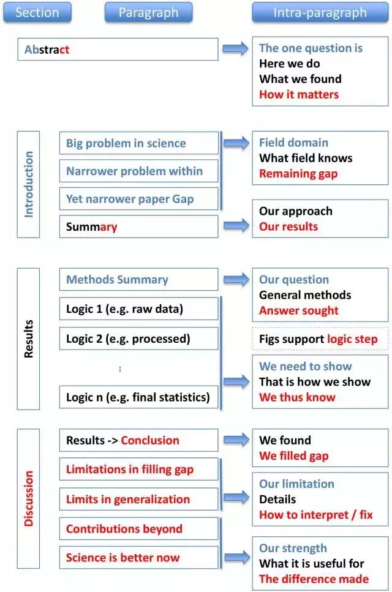

如何写好一篇论文的十条基本原则
看到一篇有关如何撰写科技论文的好文章，赶紧摘抄一下。
原则（规则 1–4）
写作即交流。因此，读者体验是首等重要的，所有的写作服务于这一目标。当你写作时，心中要时时有读者。以下四条规则是关于如何赢取读者。
规则 1：论文有一个中心主旨，并体现在标题中
规则 2：假设写作对象对论文内容一无所知
规则 3：坚持原因、内容和结论（Context-Content-Conclusion／C-C-C）结构
规则 4：避免委婉，使用并行优化的逻辑流
论文组成（规则 5-8）
论文的摘要、介绍、结果与讨论都适用于 C-C-C 结构，但各有些许不同。在下图中，我们将讨论这些专门结构的问题：

规则 5：在摘要中总结所有要点
规则 6：在介绍中讨论这篇论文的重要性
规则 7：用多个逻辑相关的陈述句（可辅以图表）给出支持论文中心思想的结果
规则 8：讨论如何填补差距、论文的局限性和论文与该领域的相关性
写作流程（规则 9 和 10）
规则 9：把时间花费到关键的地方：题目、摘要、图和大纲
规则 10：获取反馈，然后简化、重新使用、再次构造这个故事
参考链接
- 从标题到写作流程：写好一篇论文的十条基本原则,by 机器之心.